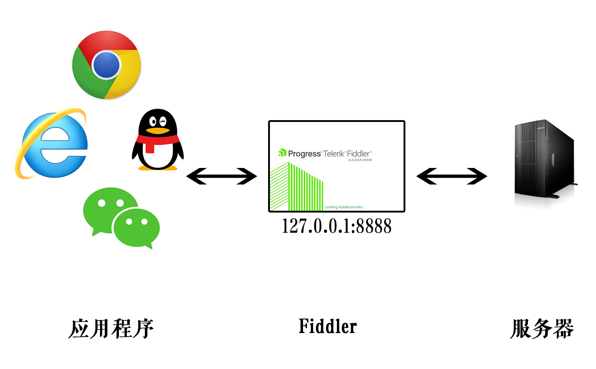
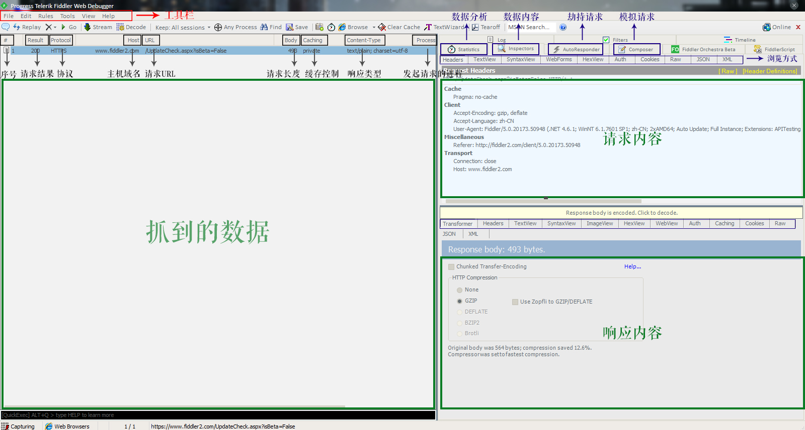

抓包工具
Fiddler
Fiddler 是一个 http 协议调试代理工具。[1]
Fiddler 的工作原理是在客户端和服务器之间设置一个 127.0.0.1:8888 的代理，从客户端发出的请求会先经过这个代理再发送给服务器，服务器响应的数据也会经过这个代理再发送到客户端。

代理设置
打开 Fiddler 后它自动对浏览器代理进行设置，关闭 Fiddler 后则自动修改回原来的设置。
界面
打开 Fiddler 后，打开(菜单栏 -> File ->) Capture Traffic 功能(默认打开)， Fiddler 就开始捕获从客户端发起的 HTTP 请求。

左边是抓取到的数据，右边是对数据的查看与操作。
可执行操作：
- Statistics
- Insperctors
- AutoRespender
- Composer
- ...
Statistics
Statistics 对请求与响应数据进行统计分析，显示请求报文长度、响应报文长度、客户端连接时间等信息。
Insperctors
Insperctors 对数据进行格式化浏览。
-
Request
- Header：请求头部信息
- TextView：请求报文主体
- SytaxView：带有语法高亮的报文主体
- WebForms
- HexView
- Auth
- Cookies：发起请求时携带的 cookies
- Raw：显示原生 HTTP 报文
- JSON
- XML
- Response
- Transformer
- Header：响应头部信息
- TextView：响应报文主体
- SytaxView：带有语法高亮的报文主体
- ImageView：查看图片
- HexView
- WebView：浏览器视图
- Auth
- Caching
- Cookies：响应请求时设置的 cookies
- Raw：显示原生 HTTP 报文
- JSON
- XML
AutoRespender
AutoRespender 允许 Fiddler 对客户端发起的请求进行拦截，之后再跳转到设置好的 URL 上。
- 点击 Add Rule 添加匹配与跳转规则
- 在下方 Rule Editor 对规则进行编辑，之后点击 Save 进行保存
- 勾选 Enable rules 开启拦截
- 字符串匹配：即使请求是否包含该字符串
- 正则匹配：使用 regex:正则表达式 进行匹配
Composer
Composer 可以自定义并发起一个 HTTP 请求。
- Parsed：使用图形化界面的选项发起 HTTP 请求
- Raw：直接写原生 HTTP 请求
参考文献
[1] 百度百科 Fiddler https://baike.baidu.com/item/Fiddler
[2] ﹏猴子请来的救兵 Fiddler 抓包工具总结 https://www.cnblogs.com/yyhh/p/5140852.html